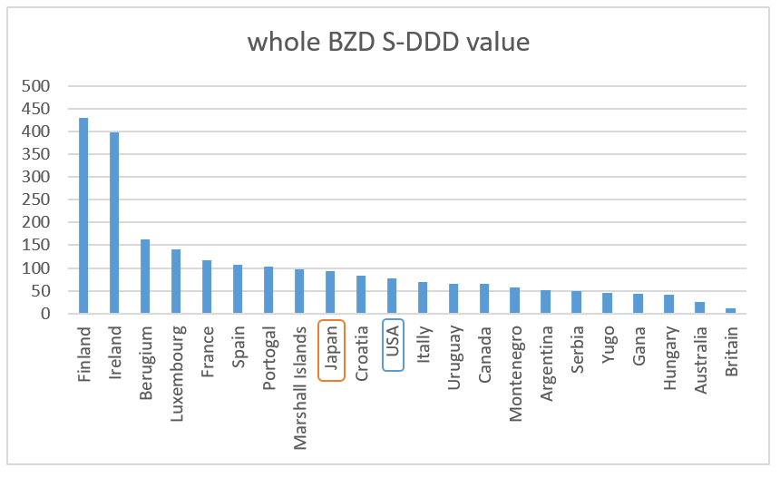

Most of sleeping pills, anxiolytics and muscle relaxants prescribed around the world are benzodiazepines.
The continuous use period of Benzodiazepines is restricted in UK, Australia and Denmark,
and are classified as narcotics in other countries too.
There are guidelines that benzodiazepines have severe physical
dependence and its prescription should not exceed 2 to 4 weeks, and some medications have
precautions on labels, for example, Ativan (Lorazepam). At last in Japan too,
the Ministry of Health, Labor and Welfare alerted about Benzodiazepine dependency in 2017,
and the polly drugs regulation took place in 2018 (max three types of benzos).
For half a century benzodiazepines have been prescribed with the common sense of "can be used for a lifetime", or
“You could take the medicine indefinitely”.
but the common sense is finally collapsing.
As a result of my investigating overseas information, easy prescription of benzos are spreading not only in Japan
but almost all over the world. Even in UK and Australia which have the most advanced regulations.
It may be because there is no system to makes it impossible to prescribe
for long-term period or no any penalties. Therefore, it is not even recognized in Asian countries.
There is no any doctor who knows the dangers and risks of benzo in Hong Kong.
In addition, looking at the latest INCB report, the number in India has increased dramatically
over the past few years. It seems that it is targeted as an sky-rocketing market.
The S-DDD value (discussed below) is still a single digit, but the total population is so huge
that the total number of users may have exceeded that of Japan. There are many complaints
insisting Japan is most distructive country in the world, but unfortunately or fortunatelly,
the terrible problem of benzo is not only in Japan but also all over the world.
This site will give you the correct information, focusing on the situation in US which is the largest benzo consumer,
probably 20-30 million benzo users.
Benzodiazepines are classified into two categories. One is sedative-hypnotics and the other is anxiolytics.
INCB (International Narcotics Control Committee) collects consumption data of them worldwide. Here is the introducing the latest data.
Left (upper) is a sleeping pill (sedative-hypnotics), right (lower) is an anxiolytic (anxiolytics)
(S-DDD value: How many tablets are consumed per day per 1,000 population. For examle In Japan, 52 sleeping pills / day / 1,000 ppl are used.)
As for anxiolytic drugs, the most prescribed benzo “depas(etizolam)” in Japan is not counted in the above INCB data. Therefore, S-DDD value of an anxiolytic in Japan is as low as 19, but it turns 40 when 21 of Depas(etizolam) is added. (Converted with 2mg = 1 tablet from the data of Ministry of Health, Labor and Welfare 2nd NBD Open Data). And this is a graph of S-DDD value of the whole benzodiazepine together.

Japan's S-DDD value is 9th worst in the world
Consumption of 92 tablet out of 1,000 people per a day.
As there are many polly drugs prescriptions in Japan, average 1.9 tablets per person.
So to all being taken into account, one of nineteen people is benzo user in Japan.
but most popular benzo "Depas" has 0.25mg, 0.5mg and 1.0mg tablet, therefore,
actually about one of 12-13 people takes the medicine.
In 2015, the S-DDD value was 100, which was the fourth worst in the world,
so it has improved slightly. But it would be better rather to understand that the status is
getting worse in other countries than Japan has improved.
Looking at the case of the United States, the S-DDD value is about 65 per 1,000 ppl in 2016 (was 55 in 2015). Since the United States is a basically single-dose, there are roughly one of fourteen. With a population of 330 million, the absolute amount is the world's largest 22 million tablets per day (≒ 22 million benzo users).
In Europe, it is the birth place of benzo (Roche, Switzerland, 1955 succeeded in developing the first benzodiazepine 'Diazepam'). The consumption rate of anxiolytic drugs is tremendous. Looking at the table above, Finland and Ireland are devastating. Is one of two taking it? If you look at Wikipedia, you look some phrase that they have a strict guidline, but in fact it is just an Heads-up with no any legal-enforcement.
Finally in Asia. It is said that in Taiwan and Hong Kong,
which are not included in INCB data, one of five to six people is taking it.
In particular, Taiwan seems to be the worst in Asia with little information (no Ashton manual in Chinese version).
I could get the specific data by the help of Taiwanese Twitter follower.
Of the 23 million population, 4.26 million takes sleeping pills.
One in ten people suffer from insomnia and one in five people are taking sleeping pills.
The data is by National Federation of Pharmacists of Taiwan.
It may be the worst in Asia, and if INCB picks up Taiwan data, it will come into the third worst in the world.
Reference article:
國人年吞9億顆安眠藥
[Why is it the biggest medication scandal in Japan?]
-Comparison of the number of victims-
HIV-tainted blood scandal: 1800
meds-induced hepatitis: Estimated over 10,000 people
Uterine cervix cancervaccine : 1,739+
Benzodiazepines: Estimated 3.5 million
(a half of the 7.3 million long-term users is accounted as benzo dependence formation)
* In addition, victims who were sacrificed during the peoriod have not been counted, the peoriod of since 50 years ago until sufferer's death. At the beginning, I used to mean “Japan's biggest scandal”, but after investigating countries around the world, I came to recognize this is literally the biggest in human history. It’s an agitating expression that seems to be awkward, but I can't help but to say it’s just a fact.
Now, benzodiazepine is a very good medication with immediate effect if it is used to be taken only once or a few days. It is often used before surgery operation or in an emergency situations. However, even if a small amount of dose is used for a long time, it turns a devil meds very hard to stop. "dependent on benzodiazepine" (it is physical dependence, not mental addiction. It's totally different). There is no mental craving. If you want to quit, you can't due to a number of intense withdrawal symptoms. If you cold-turkey it or reduce with rapid tapering, you will suffer from withdrawal symptoms that can be called “living hell” or “torture beyond human belief” for years. For example, this is how horrified it is; CHRISTINE’S STORY: ATIVAN, WITHDRAWAL, AKATHISIA AND SUICIDE. This is clearly not “addiction” but “central nervous system injury” . See this message of a woman who ended her life.
Therefore, withdrawal from benzo is much more difficult than narcotics such as LSD and heroin. There is no other way than waiting for the broken nerve system to recover year by year while gradually reducing the dose, which is called 'micro-tapering'. There is no cure. Strangely among long-term users “about a half” users forms dependent. The other half has no withdrawal symptoms at all and can easily quit it. (That's one of reasons why most doctors didn't even notice the danger of benzo in the medical field.) The pharmacological cause of why a half of users can easily quit is still unknown. However, there are various theories in the statistics. Professor Malcolm H Lader - King's College London says 20% - 40%. Task force research of Senate in US concluded 80% in 1979. This theory says that about a half of them are physically dependent after one month of continuous use. Reference paper: "Treatment of Benzodiazepine Dependence" by Michel Soyaka Ph.d
By the way, 65% of prescriptions of benzodiazepines are at “non-psychiatric” in Japan. Example:
At;
Gynecology to PMS
Otolaryngology to dizziness
Orthopedic surgery to stiff shoulders
Internal medicine to high blood pressure
Urination to frequent urination
Neurology to gastric pain
Dentistry to temporomandibular disorders
If no organic abnormalities are found, many doctors think “Ok, let's give a stabilizer”. It's like "Toriaezu, beer", “prescribed like a candy”. In fact, patients are happy because it works well and soon. If the risk is not explained continue taking it. Doctors are also happy because the patient is satisfied and their work is just writing the prescription. So you may possibly be a long-term benzodiazepine user too. There are rarely prescribers who give an informed consent such as "This is a risky one when taking for a long time." In the contrary, usually say “it is a weak one and safe meds, don't worry”. If you have a regular meds on daily basis, check out the benzodiazepine list page! And if you find you have a bingo, do not stop it without learning the safe tapering method!
To all foreigners living in Japan
In Japan, 34 types of benzodiazepines can be prescribed, and if including generics, you will not know what you are taking. (In US only four types, in Euro may have 4 -10 types). Please check the benzodiazepine list page !!
How medias report it?
In Japan, the Ministry of Health, Labor and Welfare finally recognized the dependence of benzodiazepine of
the compliant patients on March 21, 2017,
and alerted medical institutions and dispensing pharmacies nation wide in April 2018,
the regulation of max three types of benzos began. “Benzodiazepines are risky.”
Decades behind Britain have finally gained perception in Japan;
“It seems that it is not a medication that can be easily prescribed.”
However, the severity of withdrawal symptoms and safe withdrawal methods are not yet shared in
the medical community. And this dangerous side-effect of
benzos are not covered in the media at all. The situation is almost same all over the world.
It may be thought to be the pressure of a pharmaceutical company (may not only). Anyway,
out of the total population of 1.2 billion in Japan, the United States and Europe,
about 100 million people are estimated taking benzodiazepine. There are also many in Oceania,
South America, India, and the Middle East as well. In Southeast Asia,
over-the-counter is available for benzos, so the data is unknown.
I hear the number of victims of World War II is around 80 million worldwide.
Note; how much you take benzodiazepine will not cause you death.
(In case of Barbiturates the large amount of dose leads to death, rarely prescribed in this age.)
Instead, a lots "get dysfunctional while living", "limited work and housework", "needs a cost of living",
"can upload messages in various media", "can file a case", "can run for election"
If benzo case is widely known it will be an unprecedented mess.
It could be inevitable for governor/administration to set a press regulation.
Class Action
In 1980, when the benzo damage was revealed in UK, it caused the largest class action in a history by 14,000 patients and 1,800 law firms. The lawsuit insists that the pharmaceutical manufacturer knew the possibility of dependence but deliberately withheld this information from the doctor. (Unfortunately, the lawsuit itself drowned due to lack of funds). This class action led to the regulation that "doctors have to give appropriate warnings to patients about the benzodiazepine dependence and risk of withdrawal syndrome, and patients must sign the consent form that they received risk explanations" .
How to taper
So for now you have to protect yourself and your family. If you stop at the pace your doctor instructs, many mysterious symptoms occurs in addition to the original symptoms such as insomnia and anxiety. Your doctor may say that it is the “original symptom,” but symptoms are on a plane above the rest. If it is mild to moderate, it is likely to be misdiagnosed as “fibromyalgia”, “chronic fatigue syndrome” or “body expression disorder”. See HOW BENZODIAZEPINES MIMIC CHRONIC ILLNESS AND WHAT TO DO ABOUT IT.
Congratulations if you have no withdrawal symptoms!
You are a lucky person who hasn't formed the phisical dependence.
You can just drop the dosage at the pace according to your doctor' instruction.
As soon as withdrawal symptoms occur, take the dosabe back or if necessary, increase the dosage to stabilize the symptoms!
* Pace example as your doctor instructs you = “Divide a tablet in a half and take it for a few weeks,
next a quarter in a few weeks, and then down to zero.”
Don't underestimate!. In the case of benzo, you should think that tapering in a few months is too quick. cutting off in a short period of time will the symptoms more severe. Then when you thought it's unbearable after months or a year and want to reinstate to try tapering again from a scratch, the reinstatement will not have any effect. Yes, some can heal with a few weeks or months of widthdrawal symptom after rapid tapering. But no one in the world able to see if you are the one in advance. DO NOT PLAY "Russian roulette" ON YOURSELF.
On the other hand, if you carefully taper the dose on a yearly basis, you will have minimal symptoms and may be able to withdraw while you are functional enough to work. Please read the Ashton manual first. Although it was created in the 20th century, it is old information, but please consider it as an essential textbook to solidify your basic knowledge. You can download the Ashton Manual online. → Click here
If you have already read the Ashton Manual, you may understand that the sample tapering pace in the Ashton Manual is still too quick. There are also some minor mistakes in Ashton. After reading the Ashton Manual, read BENZODIAZEPINE TAPERING STRATEGIES AND SOLUTIONS. During tapering you need your own customization that only you know. Please study on this site and Twitter which tweeting small bunch of information on regular basis. It's Japanese please use Google translation and I am available to response in English.